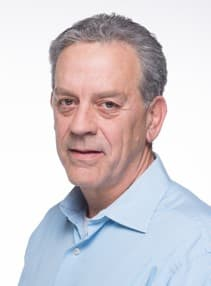

Keynotes
Keynote 1: SIGMOBILE Outstanding Contribution Award Talk:
Andrea Goldsmith (Professor, Princeton University)
 Title: Imagining the next generation of wireless networks
Title: Imagining the next generation of wireless networksAbstract: As 5G takes to the airwaves, we now turn our imagination to the next generation of wireless technology. The promise of this technology has created an international race to innovate, with significant investment by government as well as industry. And much innovation is needed as 6G aspires to not only support significantly higher data rates than 5G, up to 100 Gbps, but also improved reliability along with excellent coverage indoors and out, including for underserved areas. New architectures including edge computing must be designed to drastically enhance efficient resource allocation while also reducing latency for real-time control. Breakthrough energy-efficiency architectures, algorithms and hardware will be needed so that wireless devices can be powered by tiny batteries, energy-harvesting, or over-the-air power transfer. There are many technical challenges that must be overcome in order to make this vision a reality. This talk will describe what the wireless future might look like along with some of the innovations and breakthroughs required to realize this vision.
Speaker Bio: Andrea Goldsmith is the Dean of Engineering and Applied Science and the Arthur LeGrand Doty Professor of Electrical and Computer Engineering at Princeton University. She was previously the Stephen Harris Professor of Engineering and Professor of Electrical Engineering at Stanford University, where she is now Harris Professor Emerita.
Her research interests are in information theory, communication theory, and signal processing, and their application to wireless communications, interconnected systems, and neuroscience. She founded and served as Chief Technical Officer of Plume WiFi (formerly Accelera, Inc.) and of Quantenna (QTNA), Inc, and she currently serves on the Board of Directors for Medtronic (MDT) and Crown Castle Inc (CCI). Dr. Goldsmith is a member of the National Academy of Engineering and the American Academy of Arts and Sciences, a Fellow of the IEEE and of Stanford, and has received several awards for her work, including the IEEE Sumner Technical Field Award, the ACM Athena Lecturer Award, the ComSoc Armstrong Technical Achievement Award, the Kirchmayer Graduate Teaching Award, the WICE Mentoring Award, and the Silicon Valley/San Jose Business Journal’s Women of Influence Award.
She is author of the book “Wireless Communications’’ and co-author of the books “MIMO Wireless Communications’’ and “Principles of Cognitive Radio,” all published by Cambridge University Press, as well as an inventor on 29 patents. She received the B.S., M.S. and Ph.D. degrees in Electrical Engineering from U.C. Berkeley.
Dr. Goldsmith is currently the founding Chair of the IEEE Board of Directors Committee on Diversity, Inclusion, and Ethics. She served as President of the IEEE Information Theory Society in 2009, as founding Chair of its Student Committee, and as founding Editor-in-Chief of the IEEE Journal on Selected Areas of Information Theory. She has also served on the Board of Governors for both the IEEE Information Theory and Communications Societies. At Stanford she served as Chair of Stanford’s Faculty Senate and for multiple terms as a Senator, and on its Academic Council Advisory Board, Budget Group, Committee on Research, Planning and Policy Board, Commissions on Graduate and on Undergraduate Education, Faculty Women’s Forum Steering Committee, and Task Force on Women and Leadership.
Keynote 2: SIGMOBILE ROCKSTAR Award Talk:
Fadel Adib (Professor, MIT)
 Title: Decoding Hidden Worlds: Wireless & Sensor Technologies for Oceans, Health, and Robotics
Title: Decoding Hidden Worlds: Wireless & Sensor Technologies for Oceans, Health, and Robotics Abstract: Many of us grew up witnessing technology transform science fiction into everyday reality. Yet, as researchers and practitioners, we often assume that we have to make a choice between exploring scientific ideas that fascinate us and pursuing technologies with immediate practical impact. We also strive to transition our research to real-world adoption, often questioning how it fits within the bigger scheme of the world’s most pressing problems from healthcare to climate change. Through my academic and entrepreneurship journey, I realized that we don’t have to make a choice between these aspirations.
In this talk, I will share new technologies that came out of my journey of weaving together the realms of engineering, science fiction, and societal impact. First, I will describe a new generation of underwater sensor networks for exploring the underwater world. Our devices can sense, compute, communicate, and learn in underwater environments without requiring any batteries - paving the way for long-term ocean monitoring with important applications in climate/weather prediction, marine biology, and aquaculture (seafood production). Next, I will talk about new wireless technologies for sensing the human body, both from inside the body (via batteryless micro-implants) as well as from a distance (for contactless cardiovascular and stress monitoring), and describe how they unlock novel diagnostic and treatment methods. Finally, I will highlight our work on extending robotic perception beyond line-of-sight, and how we designed new RF-visual primitives for robotics - including sensing, servoing, navigation, and grasping - to enable new manipulation tasks that were not possible before.
The talk will cover how we designed and built these technologies, and how we work with medical doctors, climatologists, oceanographers, and industry practitioners to deploy them in the real world. I will also highlight the open problems and opportunities for these technologies, and how researchers and engineers can build on our open-source tools to help drive them to their full potential in addressing global challenges in climate, health, and automation.
Speaker Bio: Fadel Adib is the Doherty Chair at MIT and Associate Professor in the MIT Media Lab and the Department of Electrical Engineering and Computer Science. He is the founding director of the Signal Kinetics group which invents wireless and sensor technologies for networking, health monitoring, robotics, and ocean IoT. He is also the founder & CEO of Cartesian Systems, a spinoff from his lab that focuses on mapping indoor environments using wireless signals. Adib was named byTechnology Review as one of the world’s top 35 innovators under 35 and by Forbes as 30 under 30. His research on wireless sensing (X-Ray Vision) was recognized as one of the 50 ways MIT has transformed Computer Science, and his work on robotic perception (Finder of Lost Things) was named as one of the 103 Ways MIT is Making a Better World. Adib’s commercialized technologies have been used to monitor thousands of patients with Alzheimer’s, Parkinson’s, and COVID19, and he has had the honor to demo his work to President Obama at the White House. Adib is also the recipient of various awards including the NSF CAREER Award (2019), the ONR Young Investigator Award (2019), the ONR Early Career Grant (2020), the Google Faculty Research Award (2017), the Sloan Research Fellowship (2021), and the ACM SIGMOBILE Rockstar Award (2022), and his research has received Best Paper/Demo Awards at SIGCOMM, MobiCom, and CHI. Adib received his Bachelors from the American University of Beirut (2011) and his PhD from MIT (2016), where his thesis won the Sprowls award for Best Doctoral Dissertation at MIT and the ACM SIGMOBILE Doctoral Dissertation Award.
Keynote 3: Constantine Polychronopoulos (VP, Juniper Networks)

Title: Network Slicing as a Disruptive Paradigm for 5G and Beyond
Abstract: Network Slicing is a central concept in 5G networks, the functionality and architecture are specified in the 3GPP Release 16 for 5G CSP networks. In this presentation, we will provide an expanded view of Network Slicing (NS) as the ultimate, Internet-scale virtualization model and as a disruptive paradigm not just for 5G networks but for networking, cloud computing and the Internet in general. The presentation will also outline solutions to some of the more complex problems in the realization of NS, including orchestration and automation, the end-to-end requirement and in particular NS over-the-air.
Speaker Bio: Constantine Polychronopoulos is VP, 5G & Telco Cloud, at Juniper Networks, leading the company’s innovations and products in 5G and telco cloud. In the past, he served as VP and CTO at VMware, where he led the development of VMware’s NFVI and orchestration solutions for 4G & 5G networks. He was also VP & CTO of Cloud Networking at Citrix, following the acquisition of Bytemobile, Inc. As founder & CTO of Bytemobile, Inc. he led the development of an innovative transport and streaming video optimization platform that enabled a new market and was deployed in 156 3G/4G networks around the world.
Before Bytemobile, Constantine was a Professor in the Dept. of Electrical & Computer Engineering and also served as Director of the Center for Supercomputing R&D at the University of Illinois at Urbana-Champaign. He served on and chaired more than 50 ACM/IEEE conferences, published more than 165 research papers in IEEE and ACM journals and conferences and has more than 40 issued and pending patents. Among his recognitions are the NSF Presidential Young Investigator award, the 1998 Bodossaki Foundation Award in Engineering, and the Pascal Chair Professorship at the University of Leiden, The Netherlands. In 2015 he was named among the 50 innovators in the 50-year history of the Computer Science Dept. of the University of Illinois. He received his BSc from the University of Athens, an MS from Vanderbilt University and his PhD from the University of Illinois at Urbana-Champaign.
Abstract: Network Slicing is a central concept in 5G networks, the functionality and architecture are specified in the 3GPP Release 16 for 5G CSP networks. In this presentation, we will provide an expanded view of Network Slicing (NS) as the ultimate, Internet-scale virtualization model and as a disruptive paradigm not just for 5G networks but for networking, cloud computing and the Internet in general. The presentation will also outline solutions to some of the more complex problems in the realization of NS, including orchestration and automation, the end-to-end requirement and in particular NS over-the-air.
Speaker Bio: Constantine Polychronopoulos is VP, 5G & Telco Cloud, at Juniper Networks, leading the company’s innovations and products in 5G and telco cloud. In the past, he served as VP and CTO at VMware, where he led the development of VMware’s NFVI and orchestration solutions for 4G & 5G networks. He was also VP & CTO of Cloud Networking at Citrix, following the acquisition of Bytemobile, Inc. As founder & CTO of Bytemobile, Inc. he led the development of an innovative transport and streaming video optimization platform that enabled a new market and was deployed in 156 3G/4G networks around the world.
Before Bytemobile, Constantine was a Professor in the Dept. of Electrical & Computer Engineering and also served as Director of the Center for Supercomputing R&D at the University of Illinois at Urbana-Champaign. He served on and chaired more than 50 ACM/IEEE conferences, published more than 165 research papers in IEEE and ACM journals and conferences and has more than 40 issued and pending patents. Among his recognitions are the NSF Presidential Young Investigator award, the 1998 Bodossaki Foundation Award in Engineering, and the Pascal Chair Professorship at the University of Leiden, The Netherlands. In 2015 he was named among the 50 innovators in the 50-year history of the Computer Science Dept. of the University of Illinois. He received his BSc from the University of Athens, an MS from Vanderbilt University and his PhD from the University of Illinois at Urbana-Champaign.